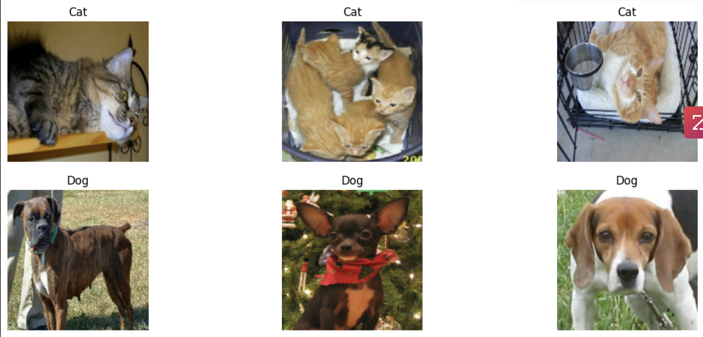
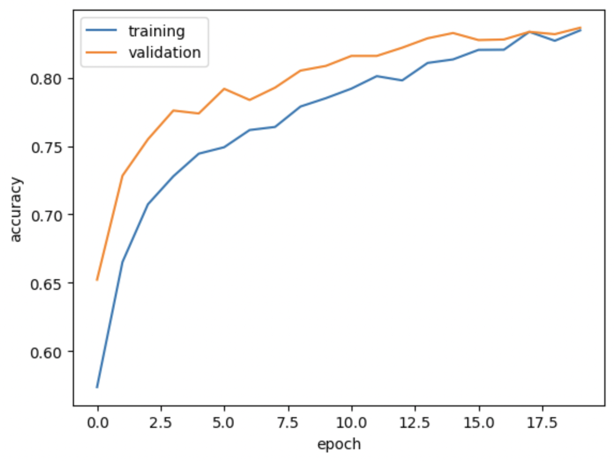

HW 5: Image Classification
Load Packages and Obtain Data
First we will import the necessary packages and obtain the data. We’ll use a sample data set from Kaggle that contains labeled images of cats and dogs.
import os
os.environ["KERAS_BACKEND"] = "tensorflow"
import keras
from keras import utils, layers, models
import tensorflow_datasets as tfdsNext, we will create Datasets for training, validation, and testing. The dataset contains images of different sizes, so we resize them to a fixed size of 150x150.
train_ds, validation_ds, test_ds = tfds.load(
"cats_vs_dogs",
# 40% for training, 10% for validation, and 10% for test (the rest unused)
split=["train[:40%]", "train[40%:50%]", "train[50%:60%]"],
as_supervised=True, # Include labels
)
print(f"Number of training samples: {train_ds.cardinality()}")
print(f"Number of validation samples: {validation_ds.cardinality()}")
print(f"Number of test samples: {test_ds.cardinality()}")
resize_fn = keras.layers.Resizing(150, 150)
train_ds = train_ds.map(lambda x, y: (resize_fn(x), y))
validation_ds = validation_ds.map(lambda x, y: (resize_fn(x), y))
test_ds = test_ds.map(lambda x, y: (resize_fn(x), y))The next block is technical code related to rapidly reading data. The batch_size determines how many data points are gathered from the directory at once.
from tensorflow import data as tf_data
batch_size = 64
train_ds = train_ds.batch(batch_size).prefetch(tf_data.AUTOTUNE).cache()
validation_ds = validation_ds.batch(batch_size).prefetch(tf_data.AUTOTUNE).cache()
test_ds = test_ds.batch(batch_size).prefetch(tf_data.AUTOTUNE).cache()Visualizing the dataset
import matplotlib.pyplot as plt
import numpy as np
def visualize_dataset(dataset, num_samples=3, title=""):
plt.figure(figsize=(15, 6))
# initialize empty sets for each animal
cat_images, dog_images = [], []
#for loop to iterate through each image in the dataset
for images, labels in dataset.take(1):
for image, label in zip(images, labels):
if label == 0:
cat_images.append(image.numpy())
else:
dog_images.append(image.numpy())
for i in range(num_samples):
# Plot cat images in the first row
plt.subplot(2, num_samples, i + 1)
plt.imshow(cat_images[i].astype("uint8"))
plt.title("Cat")
plt.axis("off")
# Plot dog images in the second row
plt.subplot(2, num_samples, i + num_samples + 1)
plt.imshow(dog_images[i].astype("uint8"))
plt.title("Dog")
plt.axis("off")
plt.show()
visualize_dataset(train_ds, title="Random Samples from Training Dataset")
Checking Label Frequencies
The following line of code creates an iterator and computes the number of images in the training data with label 0 (corresponding to “cat”) and label 1 (corresponding to “dog”).
labels_iterator= train_ds.unbatch().map(lambda image, label: label).as_numpy_iterator()# create counters for cats and dogs
num_cats = 0
num_dogs = 0
# loop the labels and count the number of cats and dogs
for label in labels_iterator:
if label == 0:
num_cats += 1
elif label == 1:
num_dogs += 1
# show results
print("Number of cat images in the training data:", num_cats)
print("Number of dog images in the training data:", num_dogs)Number of cat images in the training data: 4637
Number of dog images in the training data: 4668The baseline machine learning model is the model that always guesses the most frequent label. Because the number of dog images is greater than the number of cat images, we would expect the baseline model to always guess “dog”. Our models should do much better than the baseline.
First model
We will use Conv2D layers, MaxPooling2D layers, a Flatten layer, a one Dense layer, and a one Dropout layer in this model.
model1 = models.Sequential([
# Convolutional Layer 1
layers.Conv2D(32, (3, 3), activation='relu', input_shape=(150, 150, 3)),
layers.MaxPooling2D((2, 2)),
# Convolutional Layer 2
layers.Conv2D(64, (3, 3), activation='relu'),
layers.MaxPooling2D((2, 2)),
# Flattening the output for the Dense layer
layers.Flatten(),
# Dropout layer to reduce overfitting
layers.Dropout(0.5),
# Dense Layer
layers.Dense(64, activation='relu'),
# Output Layer
layers.Dense(10, activation='softmax')
])
model1.compile(optimizer='adam',
loss='sparse_categorical_crossentropy',
metrics=['accuracy'])history = model1.fit(train_ds,
epochs=20,
validation_data=validation)Epoch 1/20
146/146 [==============================] - 6s 37ms/step - loss: 23.2708 - accuracy: 0.5278 - val_loss: 0.7293 - val_accuracy: 0.5735
Epoch 2/20
146/146 [==============================] - 5s 32ms/step - loss: 0.6757 - accuracy: 0.5940 - val_loss: 0.6561 - val_accuracy: 0.6152
Epoch 3/20
146/146 [==============================] - 5s 35ms/step - loss: 0.6433 - accuracy: 0.6403 - val_loss: 0.6458 - val_accuracy: 0.6208
Epoch 4/20
146/146 [==============================] - 5s 33ms/step - loss: 0.6024 - accuracy: 0.6677 - val_loss: 0.6974 - val_accuracy: 0.6217
Epoch 5/20
146/146 [==============================] - 5s 32ms/step - loss: 0.5541 - accuracy: 0.7083 - val_loss: 0.7306 - val_accuracy: 0.6255
Epoch 6/20
146/146 [==============================] - 5s 33ms/step - loss: 0.5206 - accuracy: 0.7394 - val_loss: 0.7694 - val_accuracy: 0.6195
Epoch 7/20
146/146 [==============================] - 5s 32ms/step - loss: 0.7892 - accuracy: 0.6905 - val_loss: 0.7744 - val_accuracy: 0.6152
Epoch 8/20
146/146 [==============================] - 5s 35ms/step - loss: 0.5167 - accuracy: 0.7451 - val_loss: 0.7481 - val_accuracy: 0.6191
Epoch 9/20
146/146 [==============================] - 5s 33ms/step - loss: 0.4535 - accuracy: 0.7795 - val_loss: 0.8393 - val_accuracy: 0.6199
Epoch 10/20
146/146 [==============================] - 5s 33ms/step - loss: 0.3842 - accuracy: 0.8207 - val_loss: 0.8706 - val_accuracy: 0.6406
Epoch 11/20
146/146 [==============================] - 5s 33ms/step - loss: 0.3501 - accuracy: 0.8469 - val_loss: 0.9575 - val_accuracy: 0.6436
Epoch 12/20
146/146 [==============================] - 5s 33ms/step - loss: 0.3281 - accuracy: 0.8647 - val_loss: 1.3234 - val_accuracy: 0.6324
Epoch 13/20
146/146 [==============================] - 5s 33ms/step - loss: 0.3400 - accuracy: 0.8614 - val_loss: 1.0979 - val_accuracy: 0.6071
Epoch 14/20
146/146 [==============================] - 5s 33ms/step - loss: 0.3473 - accuracy: 0.8593 - val_loss: 0.9893 - val_accuracy: 0.6251
Epoch 15/20
146/146 [==============================] - 5s 33ms/step - loss: 0.2937 - accuracy: 0.8841 - val_loss: 1.1026 - val_accuracy: 0.6303
Epoch 16/20
146/146 [==============================] - 5s 33ms/step - loss: 0.2500 - accuracy: 0.8976 - val_loss: 0.9978 - val_accuracy: 0.6513
Epoch 17/20
146/146 [==============================] - 5s 32ms/step - loss: 0.2418 - accuracy: 0.9080 - val_loss: 1.0302 - val_accuracy: 0.6260
Epoch 18/20
146/146 [==============================] - 5s 33ms/step - loss: 0.2503 - accuracy: 0.9012 - val_loss: 1.0148 - val_accuracy: 0.6333
Epoch 19/20
146/146 [==============================] - 5s 33ms/step - loss: 0.1845 - accuracy: 0.9303 - val_loss: 1.0552 - val_accuracy: 0.6440
Epoch 20/20
146/146 [==============================] - 5s 32ms/step - loss: 0.1561 - accuracy: 0.9463 - val_loss: 1.1136 - val_accuracy: 0.6406# plotting validation and training accuracy
import matplotlib.pyplot as plt
plt.plot(history.history["accuracy"], label = "training")
plt.plot(history.history["val_accuracy"], label = "validation")
plt.gca().set(xlabel = "epoch", ylabel = "accuracy")
plt.legend()The model stabilized at at accuracy of around 62% during training. There does to appear to be overfitting, as the training accuracy tends to be about became significantly higher than the validation accuracy as the amount of epochs increased.
Data augmentation
Let’s try to improve upon our first model by augmenting the amount of data that is supplied to train the model. Two ways that we can augment data for images would be by rotating or flipping the image. This would allow the model to find invariant features of the input image. Let’s try out some functions to flip and rotate the images below.
plt.imshow(image[0] / 255.0)
plt.show()
# try one flip
flip1 = layers.RandomFlip()(image[0] / 255.0)
plt.imshow(flip1)
plt.show()
# try another flip
flip2 = layers.RandomFlip()(image[0] / 255.0)
plt.imshow(flip2)
plt.show()
plt.imshow(image[0]/ 255.0)
plt.show()
# try one rotation
rot1 = layers.RandomRotation(90)(image[0] / 255.0)
plt.imshow(rot1)
plt.show()
# try another rotation
rot2 = layers.RandomRotation(180)(image[0] / 255.0)
plt.imshow(rot2)
plt.show()
Now that we understand how RandomFlip and RandomRotation work, we can add them as layers to our model.
model2 = models.Sequential([
layers.RandomFlip(mode="horizontal"),
layers.RandomRotation(30),
layers.Conv2D(32, (3, 3), activation='relu', input_shape=(150, 150, 3)),
layers.MaxPooling2D((2, 2)),
layers.Conv2D(64, (3, 3), activation='relu'),
layers.MaxPooling2D((2, 2)),
layers.Flatten(),
layers.Dropout(0.5),
layers.Dense(64, activation='relu'),
layers.Dense(10, activation='softmax')
])
model2.compile(optimizer='adam',
loss='sparse_categorical_crossentropy',
metrics=['accuracy'])history = model2.fit(train_ds,
epochs=20,
validation_data=validation_ds)Epoch 1/20
146/146 [==============================] - 401s 3s/step - loss: 17.6323 - accuracy: 0.5212 - val_loss: 0.6956 - val_accuracy: 0.5365
Epoch 2/20
146/146 [==============================] - 403s 3s/step - loss: 0.7176 - accuracy: 0.5573 - val_loss: 0.6806 - val_accuracy: 0.5589
Epoch 3/20
146/146 [==============================] - 417s 3s/step - loss: 0.6885 - accuracy: 0.5818 - val_loss: 0.6533 - val_accuracy: 0.6053
Epoch 4/20
146/146 [==============================] - 408s 3s/step - loss: 0.6953 - accuracy: 0.5904 - val_loss: 0.6744 - val_accuracy: 0.6006
Epoch 5/20
146/146 [==============================] - 396s 3s/step - loss: 0.7086 - accuracy: 0.5843 - val_loss: 0.6449 - val_accuracy: 0.6221
Epoch 6/20
146/146 [==============================] - 404s 3s/step - loss: 0.6983 - accuracy: 0.5887 - val_loss: 0.6296 - val_accuracy: 0.6225
Epoch 7/20
146/146 [==============================] - 381s 3s/step - loss: 0.6820 - accuracy: 0.5929 - val_loss: 0.6643 - val_accuracy: 0.6088
Epoch 8/20
146/146 [==============================] - 389s 3s/step - loss: 0.6767 - accuracy: 0.6048 - val_loss: 0.6355 - val_accuracy: 0.6264
Epoch 9/20
146/146 [==============================] - 406s 3s/step - loss: 0.7055 - accuracy: 0.5922 - val_loss: 0.6611 - val_accuracy: 0.6225
Epoch 10/20
146/146 [==============================] - 387s 3s/step - loss: 0.6675 - accuracy: 0.6046 - val_loss: 0.6416 - val_accuracy: 0.6307
Epoch 11/20
146/146 [==============================] - 387s 3s/step - loss: 0.6710 - accuracy: 0.6043 - val_loss: 0.6314 - val_accuracy: 0.6376
Epoch 12/20
146/146 [==============================] - 405s 3s/step - loss: 0.6570 - accuracy: 0.6160 - val_loss: 0.6486 - val_accuracy: 0.6324
Epoch 13/20
146/146 [==============================] - 387s 3s/step - loss: 0.6671 - accuracy: 0.6143 - val_loss: 0.6633 - val_accuracy: 0.6255
Epoch 14/20
146/146 [==============================] - 403s 3s/step - loss: 0.6822 - accuracy: 0.6008 - val_loss: 0.6647 - val_accuracy: 0.6109
Epoch 15/20
146/146 [==============================] - 384s 3s/step - loss: 0.6487 - accuracy: 0.6152 - val_loss: 0.6157 - val_accuracy: 0.6423
Epoch 16/20
146/146 [==============================] - 397s 3s/step - loss: 0.6517 - accuracy: 0.6188 - val_loss: 0.6323 - val_accuracy: 0.6367
Epoch 17/20
146/146 [==============================] - 405s 3s/step - loss: 0.6457 - accuracy: 0.6244 - val_loss: 0.6372 - val_accuracy: 0.6414
Epoch 18/20
146/146 [==============================] - 400s 3s/step - loss: 0.6498 - accuracy: 0.6289 - val_loss: 0.6078 - val_accuracy: 0.6531
Epoch 19/20
146/146 [==============================] - 407s 3s/step - loss: 0.6616 - accuracy: 0.6015 - val_loss: 0.7009 - val_accuracy: 0.5460
Epoch 20/20
146/146 [==============================] - 401s 3s/step - loss: 0.6945 - accuracy: 0.5402 - val_loss: 0.6512 - val_accuracy: 0.5924plt.plot(history.history["accuracy"], label = "training")
plt.plot(history.history["val_accuracy"], label = "validation")
plt.gca().set(xlabel = "epoch", ylabel = "accuracy")
plt.legend()The validation accuracy stabilized around 58-62% during training. The model does not appear to be overfit, as the training and validation accuracies are relatively similar.
Data Preprocessing
To further improve our model, we can also add a preprocessing step. For example, in this case, the original data has pixels with RGB values between 0 and 255, but many models will train faster with RGB values normalized between 0 and 1, or possibly between -1 and 1. Let’s see how preprocessing changes performance.
i = keras.Input(shape=(150, 150, 3))
# The pixel values have the range of (0, 255), but many models will work better if rescaled to (-1, 1.)
# outputs: `(inputs * scale) + offset`
scale_layer = keras.layers.Rescaling(scale=1 / 127.5, offset=-1)
x = scale_layer(i)
preprocessor = keras.Model(inputs = i, outputs = x)model3 = models.Sequential([
preprocessor,
layers.RandomFlip("horizontal"),
layers.RandomRotation(factor=0.2),
layers.Conv2D(32, (3, 3), activation='relu'),
layers.MaxPooling2D(2, 2),
layers.Conv2D(64, (3, 3), activation='relu'),
layers.MaxPooling2D(2, 2),
layers.Conv2D(128, (3, 3), activation='relu'),
layers.MaxPooling2D(2, 2),
layers.Flatten(),
layers.Dense(256, activation='relu'),
layers.Dropout(0.5),
layers.Dense(1, activation='sigmoid')
])
model3.compile(optimizer='adam',
loss='binary_crossentropy',
metrics=['accuracy'])history = model3.fit(train_ds,
epochs=20,
validation_data=validation_ds)Epoch 1/20
146/146 [==============================] - 9s 46ms/step - loss: 0.6913 - accuracy: 0.5736 - val_loss: 0.6139 - val_accuracy: 0.6522
Epoch 2/20
146/146 [==============================] - 6s 44ms/step - loss: 0.6085 - accuracy: 0.6651 - val_loss: 0.5345 - val_accuracy: 0.7283
Epoch 3/20
146/146 [==============================] - 6s 44ms/step - loss: 0.5635 - accuracy: 0.7074 - val_loss: 0.5110 - val_accuracy: 0.7549
Epoch 4/20
146/146 [==============================] - 6s 44ms/step - loss: 0.5410 - accuracy: 0.7279 - val_loss: 0.4855 - val_accuracy: 0.7760
Epoch 5/20
146/146 [==============================] - 6s 44ms/step - loss: 0.5156 - accuracy: 0.7444 - val_loss: 0.4747 - val_accuracy: 0.7739
Epoch 6/20
146/146 [==============================] - 6s 44ms/step - loss: 0.5095 - accuracy: 0.7492 - val_loss: 0.4503 - val_accuracy: 0.7919
Epoch 7/20
146/146 [==============================] - 6s 44ms/step - loss: 0.4917 - accuracy: 0.7617 - val_loss: 0.4603 - val_accuracy: 0.7837
Epoch 8/20
146/146 [==============================] - 6s 44ms/step - loss: 0.4800 - accuracy: 0.7640 - val_loss: 0.4310 - val_accuracy: 0.7928
Epoch 9/20
146/146 [==============================] - 6s 43ms/step - loss: 0.4704 - accuracy: 0.7789 - val_loss: 0.4271 - val_accuracy: 0.8052
Epoch 10/20
146/146 [==============================] - 6s 44ms/step - loss: 0.4586 - accuracy: 0.7851 - val_loss: 0.4298 - val_accuracy: 0.8087
Epoch 11/20
146/146 [==============================] - 6s 43ms/step - loss: 0.4461 - accuracy: 0.7920 - val_loss: 0.4004 - val_accuracy: 0.8160
Epoch 12/20
146/146 [==============================] - 6s 44ms/step - loss: 0.4304 - accuracy: 0.8012 - val_loss: 0.4148 - val_accuracy: 0.8160
Epoch 13/20
146/146 [==============================] - 6s 43ms/step - loss: 0.4356 - accuracy: 0.7981 - val_loss: 0.3971 - val_accuracy: 0.8220
Epoch 14/20
146/146 [==============================] - 6s 44ms/step - loss: 0.4151 - accuracy: 0.8109 - val_loss: 0.3968 - val_accuracy: 0.8289
Epoch 15/20
146/146 [==============================] - 6s 43ms/step - loss: 0.4123 - accuracy: 0.8134 - val_loss: 0.3818 - val_accuracy: 0.8328
Epoch 16/20
146/146 [==============================] - 6s 44ms/step - loss: 0.4042 - accuracy: 0.8204 - val_loss: 0.3885 - val_accuracy: 0.8276
Epoch 17/20
146/146 [==============================] - 7s 45ms/step - loss: 0.3926 - accuracy: 0.8205 - val_loss: 0.3910 - val_accuracy: 0.8280
Epoch 18/20
146/146 [==============================] - 6s 43ms/step - loss: 0.3810 - accuracy: 0.8336 - val_loss: 0.3956 - val_accuracy: 0.8336
Epoch 19/20
146/146 [==============================] - 6s 44ms/step - loss: 0.3790 - accuracy: 0.8271 - val_loss: 0.4081 - val_accuracy: 0.8319
Epoch 20/20
146/146 [==============================] - 6s 44ms/step - loss: 0.3683 - accuracy: 0.8347 - val_loss: 0.3920 - val_accuracy: 0.8366plt.plot(history.history["accuracy"], label = "training")
plt.plot(history.history["val_accuracy"], label = "validation")
plt.gca().set(xlabel = "epoch", ylabel = "accuracy")
plt.legend() The validation accuracy stabilized around 80-82% during training. This is a significant improvement from what was obtained in model 1. The model also does not appear to be overfit, as the training and validation accuracies are similar.
Transfer Learning
In model 4, we wil use MobileNetV2, a model which has been trained for image classification, as a base layer for our model. We can use the code below to download MobileNetV2 and configure it as a layer.
IMG_SHAPE = (150, 150, 3)
base_model = keras.applications.MobileNetV3Large(input_shape=IMG_SHAPE,
include_top=False,
weights='imagenet')
base_model.trainable = False
i = keras.Input(shape=IMG_SHAPE)
x = base_model(i, training = False)
base_model_layer = keras.Model(inputs = i, outputs = x)Now, we can create our model. We will still use our data augmentation techniques in the previous models in addition to the pre-trained base layer that we downloaded.
model4 = models.Sequential([
layers.RandomFlip("horizontal"),
layers.RandomRotation(180),
base_model_layer,
layers.GlobalAveragePooling2D(),
layers.Dropout(0.2),
layers.Dense(2)
])
model4.compile(optimizer='adam',
loss='sparse_categorical_crossentropy',
metrics=['accuracy'])
model4.summary()Model: "sequential_6"
_________________________________________________________________
Layer (type) Output Shape Param #
=================================================================
random_flip_6 (RandomFlip) (None, 150, 150, 3) 0
random_rotation_6 (RandomR (None, 150, 150, 3) 0
otation)
model_3 (Functional) (None, 5, 5, 960) 2996352
global_average_pooling2d_4 (None, 960) 0
(GlobalAveragePooling2D)
dropout_6 (Dropout) (None, 960) 0
dense_8 (Dense) (None, 2) 1922
=================================================================
Total params: 2998274 (11.44 MB)
Trainable params: 1922 (7.51 KB)
Non-trainable params: 2996352 (11.43 MB)
_________________________________________________________________history = model4.fit(train_ds,
epochs=20,
validation_data=validation_ds)Epoch 1/20
146/146 [==============================] - 14s 49ms/step - loss: 0.9394 - accuracy: 0.6898 - val_loss: 0.7074 - val_accuracy: 0.9089
Epoch 2/20
146/146 [==============================] - 6s 43ms/step - loss: 0.7334 - accuracy: 0.8441 - val_loss: 0.6821 - val_accuracy: 0.9239
Epoch 3/20
146/146 [==============================] - 6s 44ms/step - loss: 0.6824 - accuracy: 0.8476 - val_loss: 0.6863 - val_accuracy: 0.9273
Epoch 4/20
146/146 [==============================] - 6s 43ms/step - loss: 0.6924 - accuracy: 0.8404 - val_loss: 0.6884 - val_accuracy: 0.9192
Epoch 5/20
146/146 [==============================] - 6s 44ms/step - loss: 0.6872 - accuracy: 0.8443 - val_loss: 0.6872 - val_accuracy: 0.9209
Epoch 6/20
146/146 [==============================] - 6s 44ms/step - loss: 0.6887 - accuracy: 0.8404 - val_loss: 0.6887 - val_accuracy: 0.9222
Epoch 7/20
146/146 [==============================] - 6s 43ms/step - loss: 0.6877 - accuracy: 0.8376 - val_loss: 0.6890 - val_accuracy: 0.9200
Epoch 8/20
146/146 [==============================] - 6s 44ms/step - loss: 0.6861 - accuracy: 0.8334 - val_loss: 0.6890 - val_accuracy: 0.9200
Epoch 9/20
146/146 [==============================] - 6s 43ms/step - loss: 0.6903 - accuracy: 0.8437 - val_loss: 0.6893 - val_accuracy: 0.9239
Epoch 10/20
146/146 [==============================] - 6s 44ms/step - loss: 0.6898 - accuracy: 0.8420 - val_loss: 0.6893 - val_accuracy: 0.9239
Epoch 11/20
146/146 [==============================] - 6s 43ms/step - loss: 0.6910 - accuracy: 0.8465 - val_loss: 0.6908 - val_accuracy: 0.9273
Epoch 12/20
146/146 [==============================] - 6s 44ms/step - loss: 0.6911 - accuracy: 0.8502 - val_loss: 0.6908 - val_accuracy: 0.9273
Epoch 13/20
146/146 [==============================] - 6s 44ms/step - loss: 0.6911 - accuracy: 0.8506 - val_loss: 0.6908 - val_accuracy: 0.9273
Epoch 14/20
146/146 [==============================] - 6s 43ms/step - loss: 0.6909 - accuracy: 0.8478 - val_loss: 0.6908 - val_accuracy: 0.9273
Epoch 15/20
146/146 [==============================] - 6s 44ms/step - loss: 0.6913 - accuracy: 0.8493 - val_loss: 0.6908 - val_accuracy: 0.9273
Epoch 16/20
146/146 [==============================] - 6s 43ms/step - loss: 0.6914 - accuracy: 0.8477 - val_loss: 0.6908 - val_accuracy: 0.9273
Epoch 17/20
146/146 [==============================] - 7s 45ms/step - loss: 0.6906 - accuracy: 0.8469 - val_loss: 0.6899 - val_accuracy: 0.9273
Epoch 18/20
146/146 [==============================] - 7s 47ms/step - loss: 0.6937 - accuracy: 0.8447 - val_loss: 0.6931 - val_accuracy: 0.9278
Epoch 19/20
146/146 [==============================] - 6s 43ms/step - loss: 0.6921 - accuracy: 0.8421 - val_loss: 0.6931 - val_accuracy: 0.9273
Epoch 20/20
146/146 [==============================] - 6s 44ms/step - loss: 0.6925 - accuracy: 0.8409 - val_loss: 0.6931 - val_accuracy: 0.9273import matplotlib.pyplot as plt
plt.plot(history.history["accuracy"], label = "training")
plt.plot(history.history["val_accuracy"], label = "validation")
plt.gca().set(xlabel = "epoch", ylabel = "accuracy")
plt.legend()The validation accuracy stabilized around 93% during training. This is a large improvement from what was obtained in model 1. The model also does not appear to be overfit, as the training accuracy is actually lower than the validation accuracy for all of the epochs.
Score on test data
Let’s see how model4 performs on unseen test data.
# Score on test data
loss, acc = model4.evaluate(test_ds)
print('Test accuracy:', acc)37/37 [==============================] - 3s 75ms/step - loss: 0.6926 - accuracy: 0.9351
Test accuracy: 0.9350816607475281The test accuracy is very high at 93.5%, meaning that our model performs well!